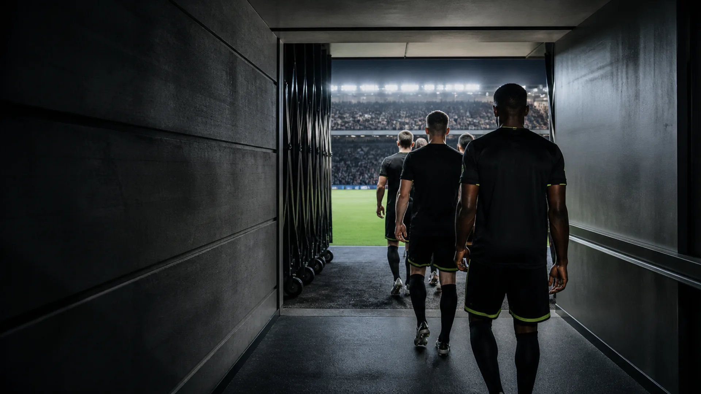

Prévisions football · saison 2026/27
Score Predict
On étudie beaucoup de matchs.
On n’en publie que très peu.
le choix↘
Lecture des rencontres du moment…
Mise à jour automatique chaque matin
01Le choix du moment
Un seul choix.
Pas de bruit.
Recherche en cours
Dernière analyse —
00
Aucun choix aujourd’hui.
C’est un résultat normal : aucun match n’a franchi tous les contrôles.
La sélection avant la quantité
0 matchs étudiés.
0 retenu.
Notre système écarte les rencontres trop floues. Si rien ne ressort, rien n’est publié — et c’est exactement le comportement attendu.
Voir comment on choisit →02Simple à comprendre
Notre méthode
Les chiffres travaillent.
Vous gardez l’essentiel.

01
Une analyse quotidienne,
avant les matchs.
-
01
On rassemble les matchs.
Calendrier, forme récente et cotes disponibles sont réunis avant le coup d’envoi.
-
02
On compare les scénarios.
Plusieurs lectures du match se confrontent. Les avis fragiles sont éliminés.
-
03
On ne garde que le meilleur.
Seules les rencontres qui passent tous les contrôles apparaissent sur le site.
-
04
On revient après le match.
Gagné ou perdu, le résultat est conservé pour construire un historique honnête.
Tous les jours, le même rituel
Observer.
Écarter.
Choisir.
ScorePredict / Film 01
03Après le match
Une mémoire qui ne
réécrit pas l’histoire.
Chaque choix publié est conservé, puis vérifié une fois le score final connu.
0En attente
0Gagnés
0Perdus
Mémoire en cours de vérification
Lecture de l’historique…
Les premiers résultats apparaîtront ici après les matchs recommandés.